The complete resource directory.
Tools, courses, reading, YouTube channels, and podcasts. Find something for the way you want to learn.
What will you practise today?
See the website, learn who it suits, and pick a way to practise. Browse by skill, language, or format.
All resources are listed below. Turn on JavaScript to use search, filters, and saved resources.
Combine a skill with a language or format. Study tips and suitability are editorial suggestions; access notes distinguish free resources from paid extras.
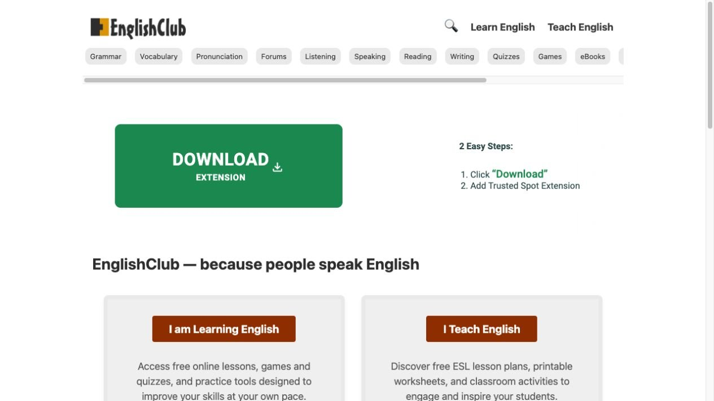
EnglishClub
Look up a rule, then put it into practice
An English study library organized by grammar, vocabulary, pronunciation, listening, reading, and writing. Lessons, quizzes, and games make it easy to work on one specific weakness without following a whole course.
Good for: Self-study learners who want a reference library and short exercises.
Study tips & access
Try this: Choose one grammar topic, take its quiz, and write three examples about your own life.
The site describes its online learning materials as free. Books and external products have separate conditions.
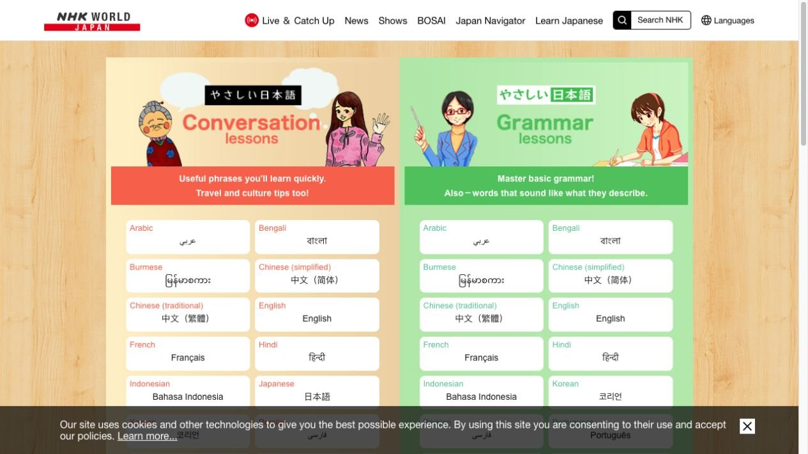
NHK Easy Japanese
Start Japanese with short, practical conversations
NHK’s learner site offers conversation and grammar lessons with audio and text. Explanations are available in several languages, making it a useful starting point for everyday phrases and the basic patterns behind them.
Good for: Beginners who want guided audio with explanations in a familiar language.
Study tips & access
Try this: Choose one conversation lesson and practise its key phrase in three situations.
The screenshot shows the official language-selection homepage. Choose an explanation language to reach lessons.
90 Day Korean
Follow a structured route into Korean conversation
A Korean course provider with beginner-to-intermediate programs and a public learning blog. Introductory resources cover Hangeul, everyday expressions, grammar, and practical situations such as ordering food and making small talk.
Good for: Beginners who want a course structure and English explanations.
Study tips & access
Try this: Learn one sentence pattern and use it to ask and answer three questions.
Public articles and videos are separate from paid structured courses. Course outcomes are provider claims, not guaranteed results.
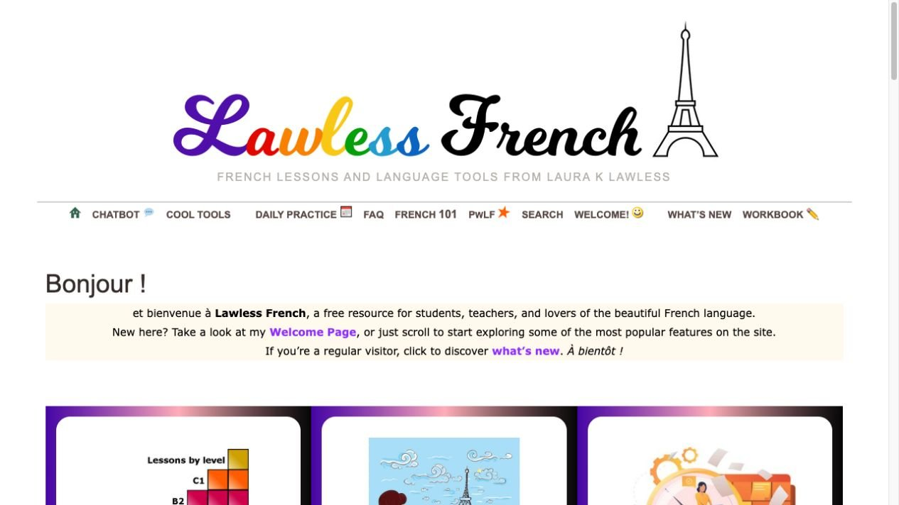
Lawless French
Find a clear explanation for a French rule
Laura K. Lawless organizes French lessons by level, grammar topic, pronunciation, and vocabulary. Reading, listening, writing, verb tables, and quizzes provide several ways to revisit a difficult point.
Good for: Learners who want English explanations and a detailed French reference.
Study tips & access
Try this: Study one grammar rule, write three examples, and return to it after your next reading session.
Many lessons are free. Some tests require an account, and linked personalized learning services have separate plans.
deutsch.info
Learn German with explanations in different languages
A multilingual German learning platform with courses from A1 to B2, grammar explanations, audio-visual materials, games, and a media library. Practical information about life in Germany and Austria adds context to the lessons.
Good for: Beginners and intermediate learners who want guided study and everyday context.
Study tips & access
Try this: Complete one course section and use its new grammar in three personal sentences.
The platform advertises free learning and registration. The screenshot shows its English interface.
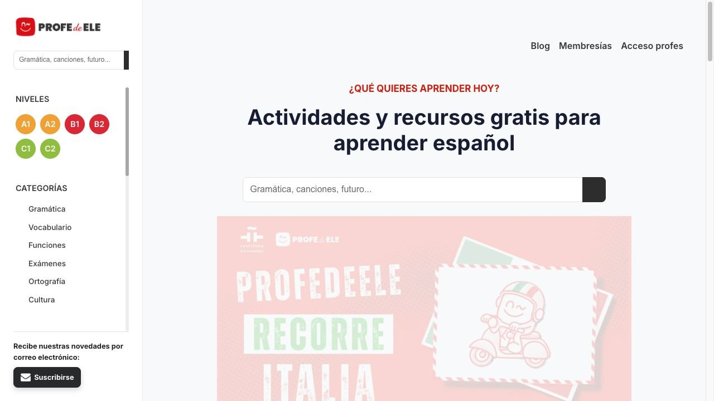
ProfeDeELE
Practise Spanish through complete topic activities
Interactive Spanish activities combine grammar, vocabulary, reading, listening, and written expression. The homepage highlights tasks such as communicative dictation and article-based lessons, with level labels to help you choose.
Good for: Learners and teachers who want a task to complete around a real topic.
Study tips & access
Try this: Try a short dictation, then use its vocabulary to write your own shopping list or message.
Free activities coexist with paid resource packs, digital courses, and teacher memberships.
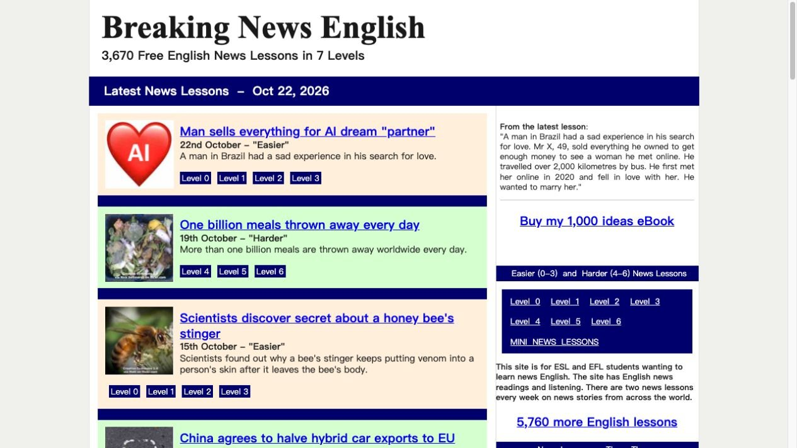
Breaking News English
Read the news at a manageable level
News-based English lessons arranged across seven numbered levels. Choose an easier or harder version of a topic, then use the accompanying lesson materials to connect reading with listening and vocabulary practice.
Good for: Learners who prefer current affairs to textbook dialogues.
Study tips & access
Try this: Read one short story, listen again, and give a two-sentence spoken summary.
News lessons are advertised as free. The numbered levels belong to this site and are not CEFR certificates.
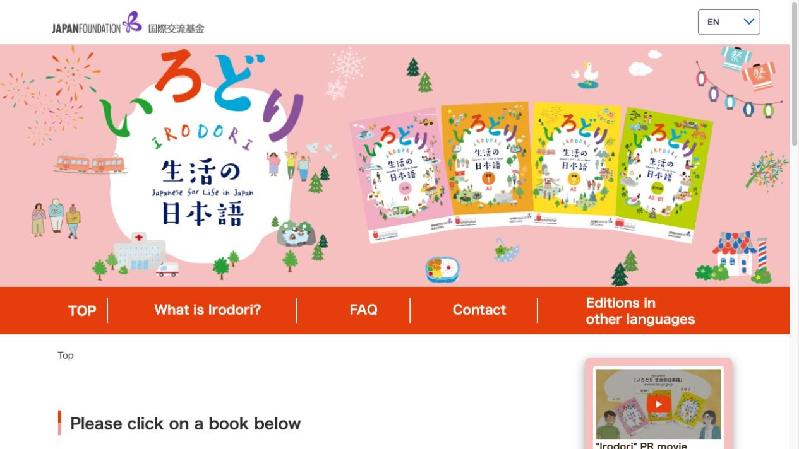
Irodori: Japanese for Life in Japan
Learn Japanese for everyday life in Japan
Japan Foundation materials organized around practical communication, with Starter, Elementary, and Pre-Intermediate books. The site provides textbook resources and an entry to the related online course.
Good for: Learners preparing for daily life, work, and local interactions in Japan.
Study tips & access
Try this: Pick one everyday task, study its model conversation, and adapt it to your own situation.
Textbook resources and the linked online course are separate services. Check the access instructions for each.
GO! Billy Korean
Study Korean with clear, topic-by-topic explanations
Billy’s site links beginner lessons, Hangeul instruction, conversation practice, pronunciation advice, interviews, and downloadable study material. The Into Korean podcast adds discussion about learning and using the language.
Good for: Learners who prefer English explanations and concrete spoken examples.
Study tips & access
Try this: Watch one sentence-ending lesson and practise it in a short dialogue.
Public lessons and some PDFs are available. Books and related products are separate.
Le français facile avec RFI
Use the news for French listening and reading
RFI combines learner podcasts, the Journal en français facile, and exercises organized by level. News, culture, vocabulary, and bilingual series offer alternatives to a traditional course dialogue.
Good for: Learners who want regular French audio and a task to work on afterward.
Study tips & access
Try this: Listen to a short extract, check the supporting text, and retell one news item aloud.
Public learning pages were reviewed. The screenshot was taken after rejecting optional cookies.
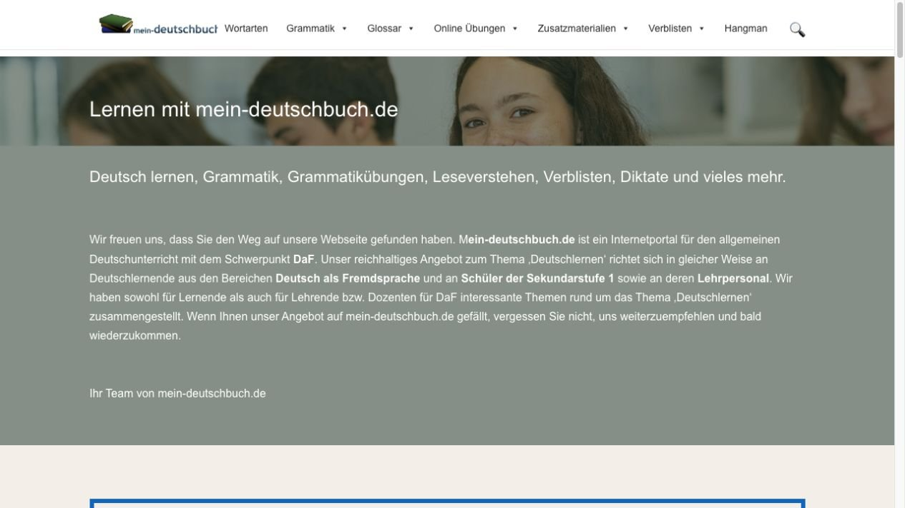
Mein Deutschbuch
Look up German grammar and practise sentence structure
A German learning reference with grammar explanations, verb lists, online exercises, reading comprehension, and dictation material. Its examples and case information help when checking a sentence you want to write.
Good for: Learners who can follow explanations in German and want a detailed reference.
Study tips & access
Try this: Check one verb and its required case, then write examples with two different subjects.
Public learning pages were reviewed. The site reports that it is being updated, so some sections may change.
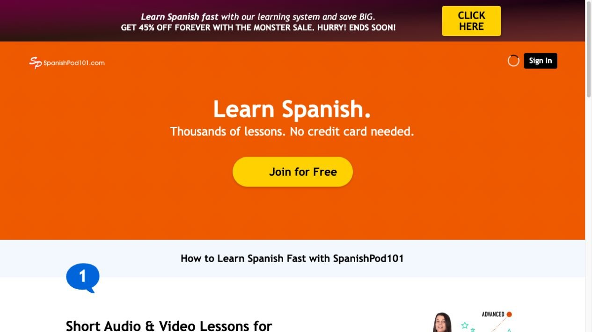
SpanishPod101
Break Spanish conversations into learnable parts
Audio and video lessons explain dialogues phrase by phrase, with slower listening and vocabulary review tools. Selected plans add pronunciation recording and personal teacher feedback.
Good for: Learners who want guided audio and explanations rather than audio alone.
Study tips & access
Try this: Repeat one exchange and change the place, person, or time to make it relevant to you.
Free registration is offered. Full library access and teacher support depend on the current subscription.
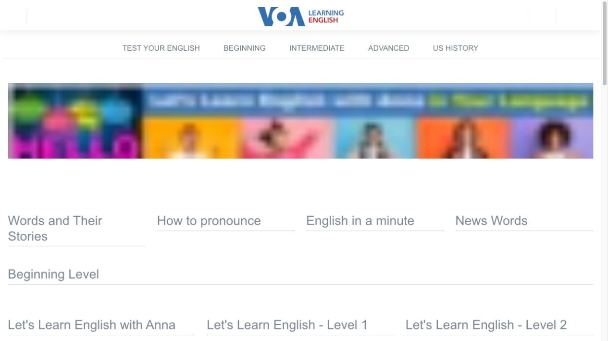
VOA Learning English
Build an American English listening habit
VOA groups learner content into beginning, intermediate, and advanced sections. Its video and audio programs include everyday grammar, pronunciation, short expressions, stories, and lessons for people starting English.
Good for: Learners looking for American English and regular listening material.
Study tips & access
Try this: Choose a short pronunciation or expression video and repeat one useful sentence with the speaker.
Public program pages were reviewed; availability of individual media can vary by region.
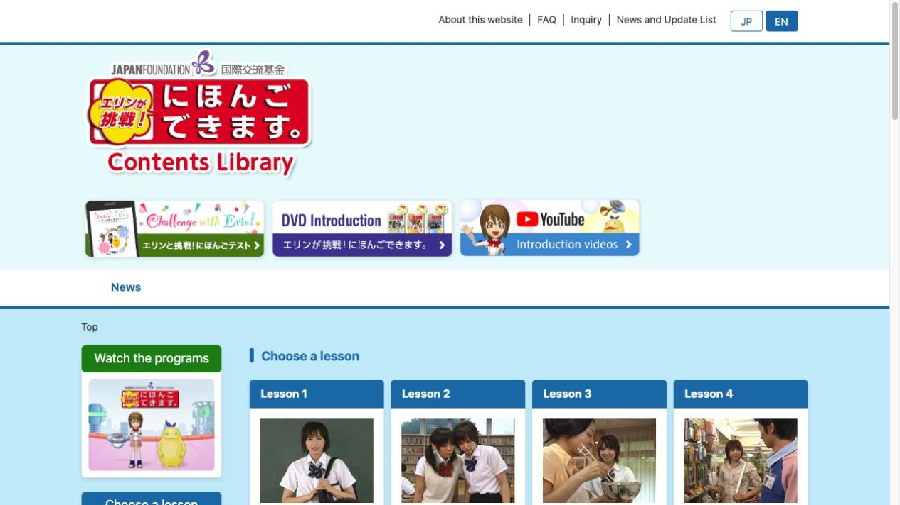
Erin’s Challenge! I Can Speak Japanese
Hear Japanese in everyday scenes
A Japan Foundation video library built around school, home, shops, travel, and other situations. Basic and advanced skits, key phrases, vocabulary activities, and cultural sections let you revisit the same setting from several angles.
Good for: Learners who like seeing a conversation happen rather than only reading it.
Study tips & access
Try this: Watch a basic skit, repeat the key phrase, and try the advanced version afterward.
The official contents library is public. Media playback and downloadable materials were not fully tested.
KoreanClass101
Learn Korean through short audio dialogues
Conversation-based audio and video lessons explain Korean words and phrases step by step. Review tools, slower audio, vocabulary lists, and optional teacher feedback support different ways of working through a dialogue.
Good for: Learners who want guided listening with English explanations.
Study tips & access
Try this: Repeat one exchange, then answer its question using information about yourself.
Free account registration is offered. Full lesson access and personal teacher feedback depend on subscription level.
Podcast Français Facile
Practise French with dialogues and short exercises
A French-as-a-foreign-language resource site with beginner and intermediate course paths and learning materials. Dialogue-based audio and exercises make it useful for close listening, reading aloud, and reviewing a single grammar point.
Good for: Learners who want short, focused French practice rather than long interviews.
Study tips & access
Try this: Work with one dialogue: understand it first, then rehearse the two speakers’ lines.
Public learning resources coexist with books and external purchase links. Check the conditions of each downloadable resource.
Deutsch perfekt
Read about life in German-speaking countries
A German learning magazine site with reading, listening, vocabulary, and practice sections. Culture and everyday-life topics offer a bridge from course exercises to more sustained German reading.
Good for: Learners who want magazine-style content rather than only grammar drills.
Study tips & access
Try this: Read a short article, collect a few useful expressions, and write a brief reaction.
Public web content, magazine issues, audio trainers, and subscription material have different access conditions.
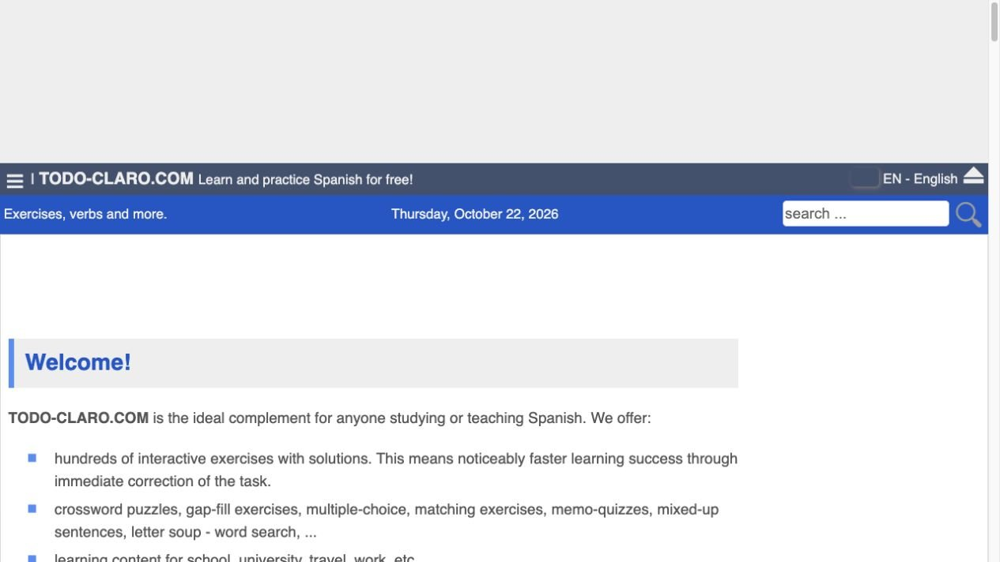
Todo-claro
Practise Spanish with immediate exercise answers
A Spanish exercise library with gap fills, matching tasks, mixed-up sentences, quizzes, and word games. A verb trainer and conjugator add focused revision of the forms you need for your own sentences.
Good for: Learners who want short grammar and vocabulary drills.
Study tips & access
Try this: Complete one mixed-up sentence activity, then write a similar sentence without prompts.
The site advertises its exercises as free. Interactive activities were not individually function-tested.
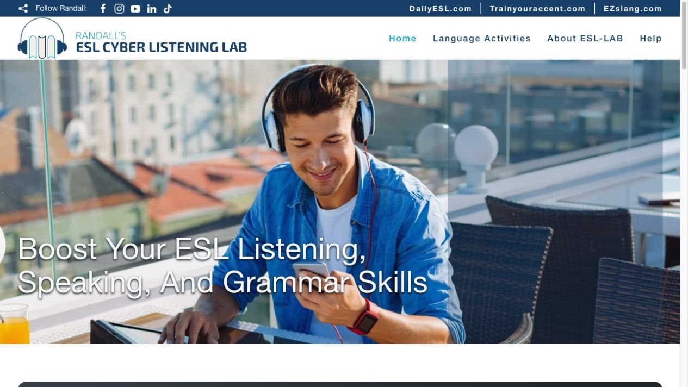
Randall’s ESL Cyber Listening Lab
Check what you actually understood
Everyday listening activities with easy, intermediate, and difficult sections. Topic-based study paths, interviews, culture videos, and grammar lessons help turn passive listening into comprehension and discussion practice.
Good for: Learners who want questions and a clear task after listening.
Study tips & access
Try this: Listen once without reading, answer the quiz, then replay the exchanges you missed.
The public lesson library was reviewed. The homepage contains advertising; individual activities were not functionally tested.
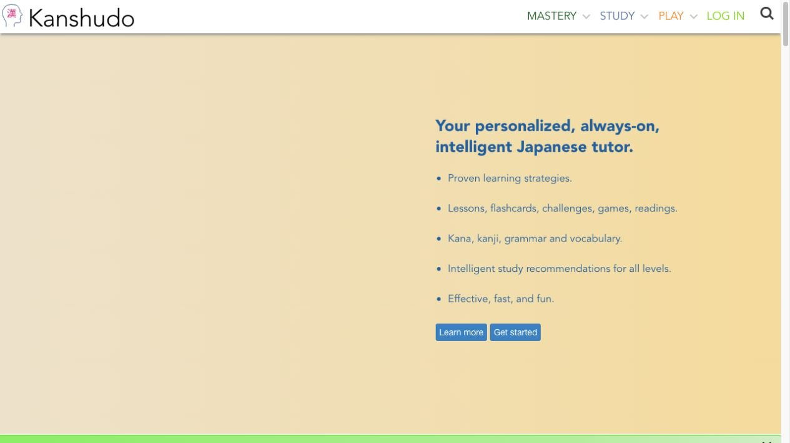
Kanshudo
Connect kanji, words, and grammar in one study system
Kanshudo combines dictionaries, lessons, readings, games, and spaced-repetition flashcards. Its study recommendations and progress tracking are intended to help you review Japanese as connected skills rather than isolated lists.
Good for: Self-study learners who want organized kanji and vocabulary review.
Study tips & access
Try this: Review a small word set, then read a passage where those words appear.
Free use requires a login and has caps on some features. Pro access is separate.
Key to Korean
Look up a grammar pattern or organize a study challenge
An archive of Korean study notes covering verb conjugations, vocabulary, TOPIK preparation, and reading ideas. It is useful for finding a compact explanation or a practical way to structure an independent study session.
Good for: Self-study learners looking for reference notes rather than a polished course app.
Study tips & access
Try this: Choose a conjugation chart and write five sentences using the different endings.
Public archive pages were reviewed. Some posts are older, and the homepage screenshot contains an advertising overlay.
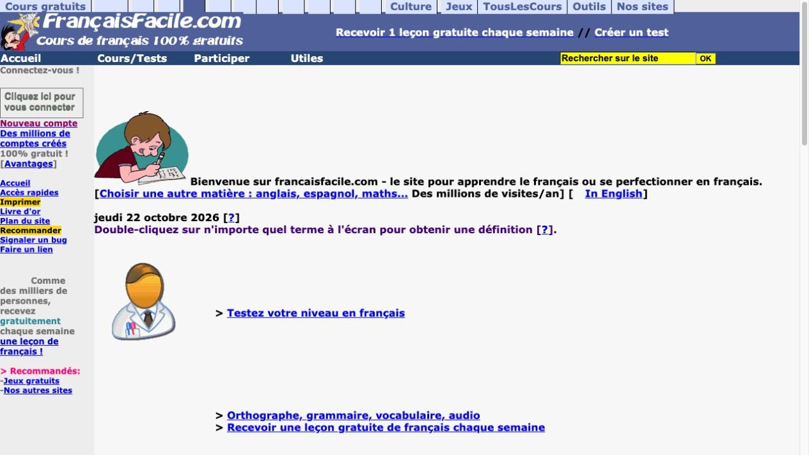
FrançaisFacile.com
Drill a French rule until it becomes familiar
A large French learning site with lessons, spelling and grammar exercises, vocabulary activities, and member forums. Its reference tools help you move between studying a rule and checking how to use it.
Good for: Learners who like lots of short, targeted exercises.
Study tips & access
Try this: Choose one spelling or grammar exercise and write down why each correction is needed.
The site describes its learning resources as free. Member activities and forums may require an account.
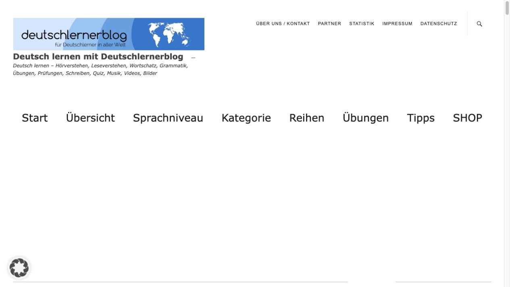
Deutschlernerblog
Find practice by topic, level, or skill
A German study blog with listening and reading comprehension, grammar, vocabulary, writing, quizzes, and exam-related material. The themed series are useful for studying expressions in context and revisiting them later.
Good for: Learners who want a broad supplement to a German course.
Study tips & access
Try this: Choose an expression article and write a short paragraph using two of the phrases.
Public articles are available. Shop products and linked external resources have separate terms.
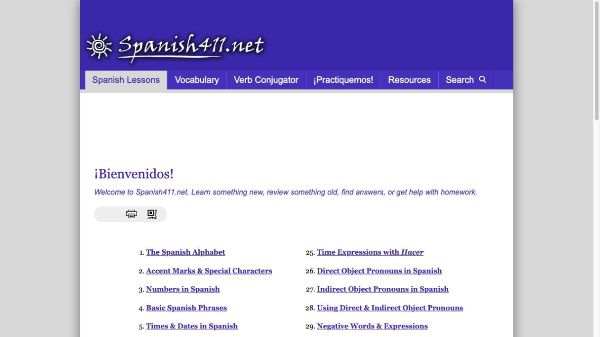
Spanish411
Look up the Spanish rule behind your sentence
English explanations cover Spanish sentence structure, accents, punctuation, pronouns, and verb tenses. Comparison topics such as ser versus estar and por versus para make the site useful while drafting or revising.
Good for: English-speaking learners who want a direct grammar reference.
Study tips & access
Try this: Read one comparison and write two examples that make the difference clear.
Public reference pages were reviewed. Use the explanations alongside practice and feedback from other sources.
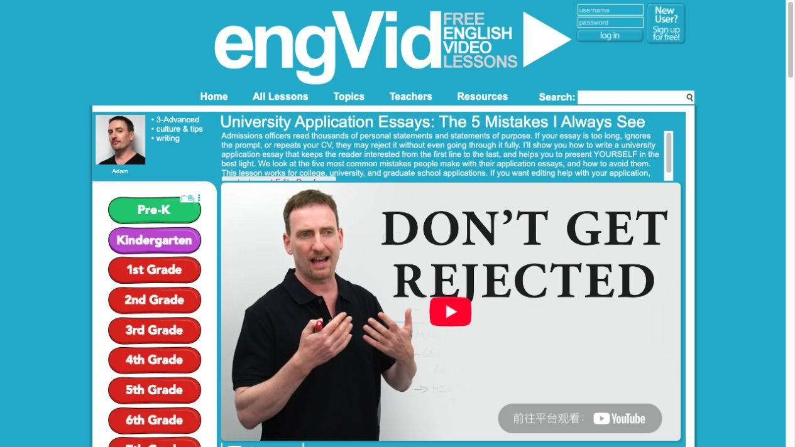
engVid
Get a teacher’s explanation of a specific problem
An English video lesson library with multiple teachers, topics, and difficulty labels. Lessons cover practical grammar, essay writing, everyday expressions, and the connected speech that makes real conversations difficult to follow.
Good for: Learners who understand a rule better when a teacher explains examples.
Study tips & access
Try this: Watch one writing lesson and revise a paragraph using just that lesson’s advice.
Lessons are publicly viewable. Teacher services or products linked from lessons are separate.
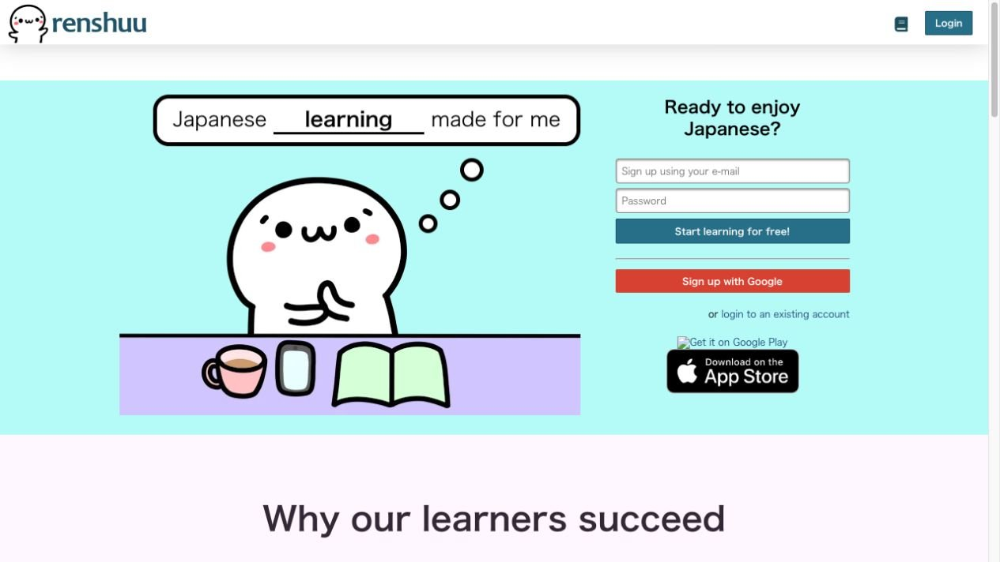
renshuu
Make Japanese review more varied
A Japanese learning system with vocabulary, kanji, grammar, sentence practice, dictionaries, and games. Curated and user-made study packs let you follow a ready-made path or focus on material you are currently learning.
Good for: Learners who want review activities beyond turning over flashcards.
Study tips & access
Try this: Choose a small study pack that matches your textbook and review it every day for a week.
Free sign-up is offered. Check current Pro features and app conditions before committing.
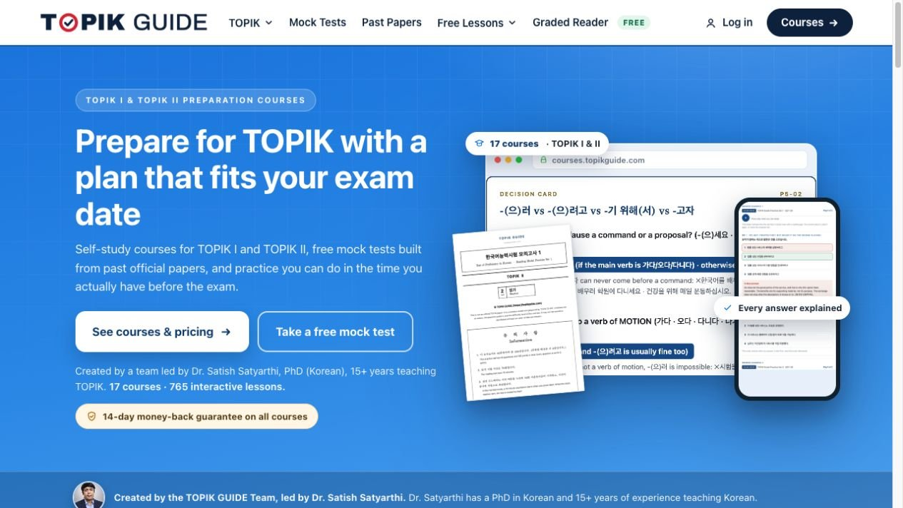
TOPIK Guide
Practise Korean with an exam plan
A TOPIK preparation site with mock tests, past papers, learning guides, and paid courses. It separates starting Korean from preparing for TOPIK I or II, helping you choose material for a particular exam goal.
Good for: Learners who want reading, listening, and writing practice for TOPIK.
Study tips & access
Try this: Try one timed practice section, then review every answer before attempting another.
Free tests and study resources coexist with paid courses. It is a preparation provider, not the official exam organizer.
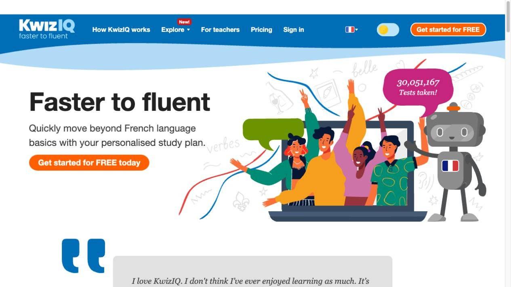
Kwiziq French
Find and revisit the gaps in your French
Kwiziq uses a level test, short quizzes, feedback, and a personalized study plan to organize French learning. It is suited to systematic review when you know some French but repeatedly miss particular rules.
Good for: Learners who want a plan built around their weak points.
Study tips & access
Try this: Take a short quiz, study one explanation for a mistake, and write an example before retrying.
Free registration is offered; testing allowances and additional practice depend on the current plan.
Slow German
Slow down German listening without losing the topic
Annik Rubens presents clear, slower German podcasts about everyday life, society, and culture. The site currently identifies its main material with B1/B2 study and links videos where learners can read along.
Good for: Intermediate learners who need more manageable German audio.
Study tips & access
Try this: Listen once for meaning, read along on a second pass, then shadow a few sentences.
The podcast is described as free. Additional PDFs, exercises, and other premium material are separate.
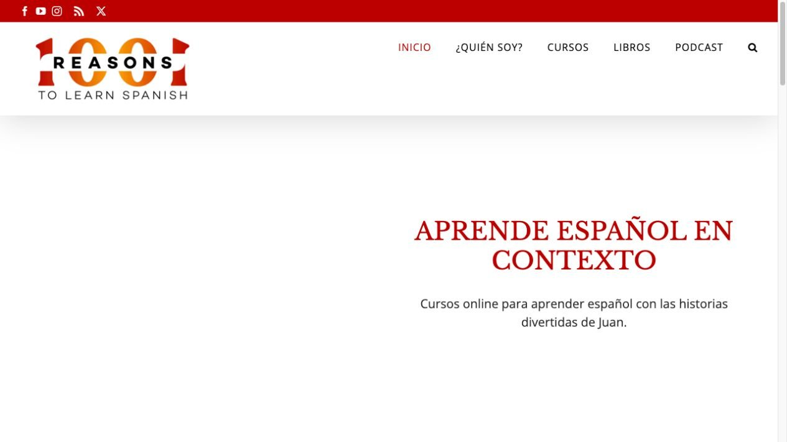
Español con Juan
Meet Spanish grammar inside a story
Juan uses humorous stories, gradual repetition, and expressions in context to teach Spanish. The site links public videos and podcast episodes as well as courses that develop vocabulary and grammar through stories.
Good for: Learners who remember stories more easily than isolated rules.
Study tips & access
Try this: Listen to a short story, retell it, and reuse one expression in a new situation.
Public videos and podcast material are separate from the paid online courses.
Espresso English
Study one small English topic at a time
Shayna’s short lessons focus on common expressions, grammar, vocabulary, pronunciation, and workplace English. The site combines a public tips blog and video channel with structured courses for more sustained practice.
Good for: Busy learners who want focused lessons instead of long study sessions.
Study tips & access
Try this: Choose one vocabulary lesson and use five expressions in a short voice memo.
Public tips and videos are separate from paid courses, PDF libraries, and academy access.
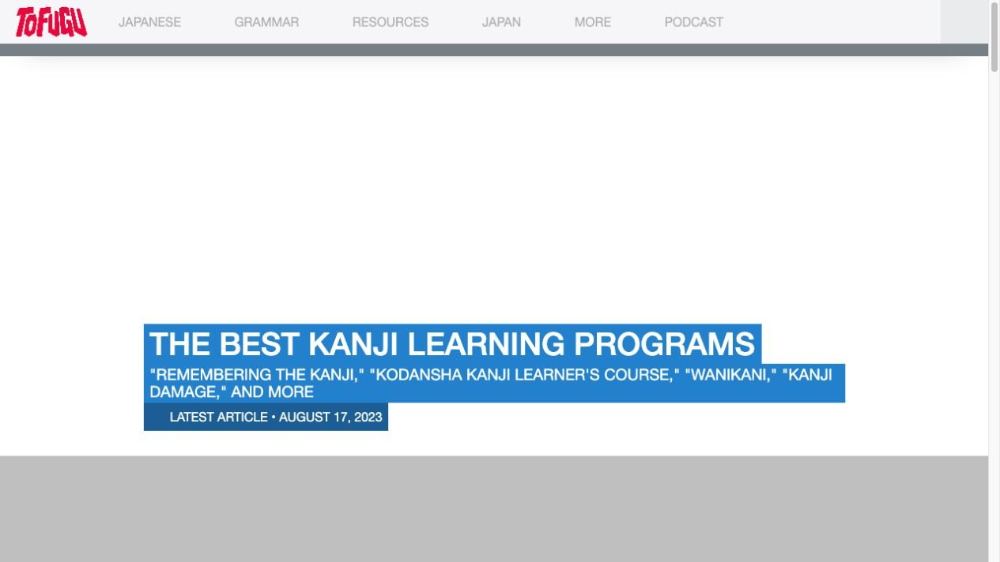
Tofugu
Understand why a Japanese expression works
Long-form Japanese learning articles explain grammar distinctions, kana, kanji study, and practical questions that come up during self-study. Resource guides help you choose a next step when a textbook explanation feels too brief.
Good for: Learners who want detailed English explanations and comparisons.
Study tips & access
Try this: Read one comparison article and write paired examples showing the difference.
Articles are public. Resource recommendations may point to separate paid products; this is a reference blog, not a graded Japanese reader.
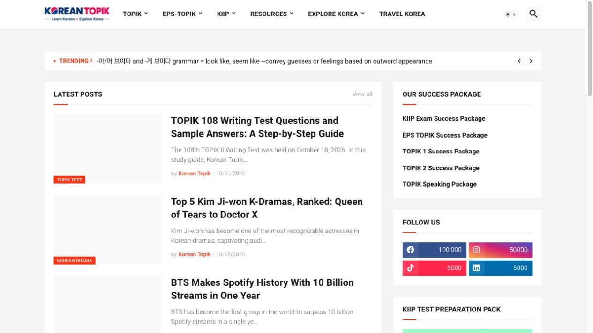
Korean Topik
Study Korean writing examples and exam material
Learning articles include TOPIK writing questions, sample answers, grammar explanations, and KIIP-related study material. The site also publishes Korean culture and entertainment news, so use its learning categories for focused study.
Good for: TOPIK II learners looking for writing models and explanation articles.
Study tips & access
Try this: Draft your own answer before reading a writing example, then compare the structure.
Public articles were reviewed. This is an independent study site; sample answers are not official examiner feedback.
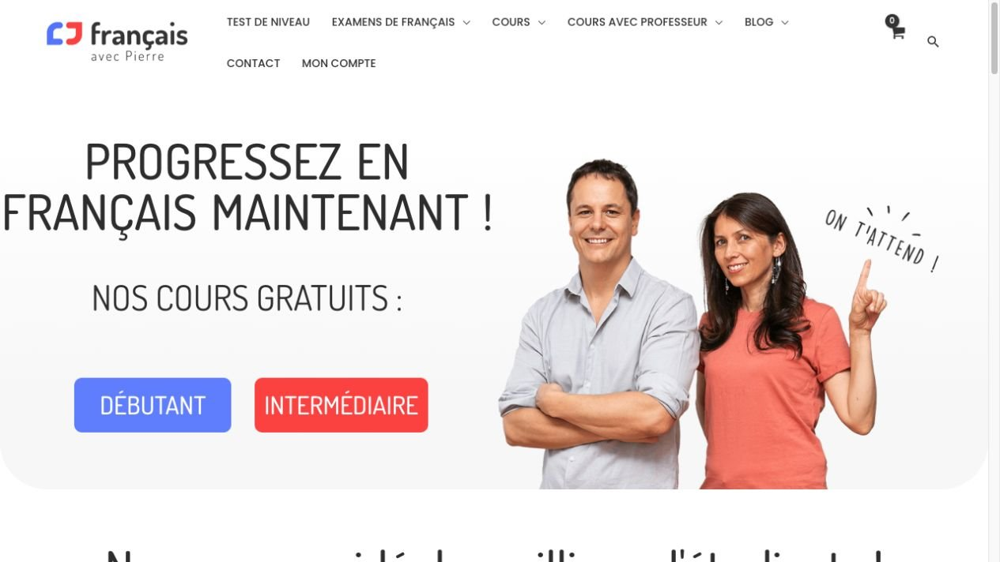
Français avec Pierre
Combine French explanations with spoken practice
Pierre’s site brings together free introductory material, videos, podcasts, stories, and dialogues. Structured self-study courses and conversation classes provide separate options for learners who want a longer program.
Good for: Learners who want teaching mainly in French and practical examples.
Study tips & access
Try this: Watch one explanation, copy a short model, and record an answer using the same pattern.
Public content is separate from academy membership, intensive courses, and private tuition.
DeutschAkademie Grammar Trainer
Work through German grammar by level or topic
A free online grammar trainer with exercises organized from A1 to C1 and by grammar topic. The learning hub also links grammar explanations, exam practice, an introductory audio course, and downloadable reference tables.
Good for: Learners who want targeted practice with cases, tenses, or sentence patterns.
Study tips & access
Try this: Choose a weak grammar topic and explain your mistakes after completing a short exercise set.
The online learning hub advertises free material. Taught language-school courses are separate paid services. The screenshot uses essential cookies only.
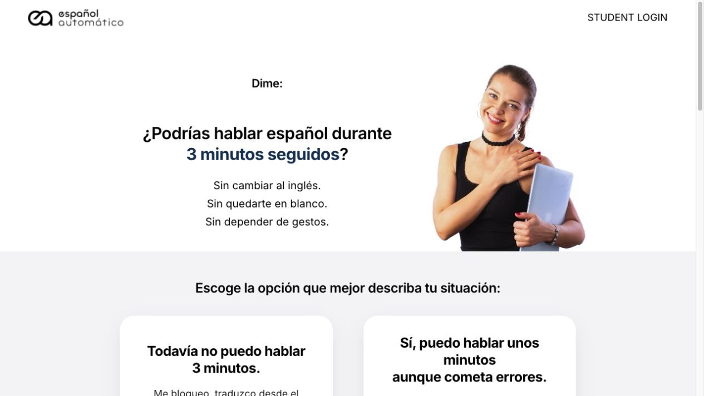
Español Automático
Practise responding in Spanish more readily
A Spanish learning site focused on understanding conversations and speaking with less hesitation. Its programs emphasize useful structures and expressions, while the linked podcast and videos provide more listening material.
Good for: Learners who understand some Spanish but still pause to translate.
Study tips & access
Try this: Choose a short extract and answer a question about it aloud before replaying it.
Free guides or classes can require registration. Paid programs and publicly available podcast content have different conditions.
To Fluency
Turn English study into a repeatable routine
Jack’s site brings together English learning advice, practical speaking guidance, videos, and a learner podcast. It is useful for choosing how to practise, alongside material you can listen to repeatedly.
Good for: Learners who need a consistent listening and speaking routine.
Study tips & access
Try this: Take one short podcast extract, listen twice, and retell the main idea without reading.
The public website and linked channel were reviewed. Check the terms of any separate training program.
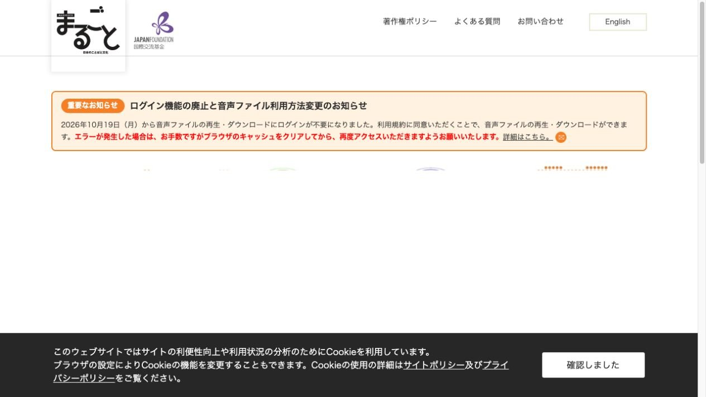
Marugoto
Follow a course built around communication
The official companion site for the Japan Foundation’s Marugoto materials. It organizes learning-resource downloads, audio access, e-learning links, and teacher support around the textbook series.
Good for: Learners already using Marugoto or looking for a structured course path.
Study tips & access
Try this: Choose the resource for your textbook lesson and rehearse its communication task aloud.
The site moved to marugoto.jpf.go.jp. Textbooks, companion downloads, and linked e-learning have separate access terms; audio use may require agreeing to site terms.

StoryKorean
Read Korean through traditional stories
Korean stories are adapted and translated for learners, with beginner and intermediate selections on the homepage. Short plots make it easier to keep reading and meet vocabulary again in a memorable context.
Good for: Learners who want a reading habit after learning Hangeul.
Study tips & access
Try this: Read one paragraph without translating, check the support text, and summarize it in Korean.
Featured free stories are marked on the site. Website and mobile-app access may differ; check additional story access.
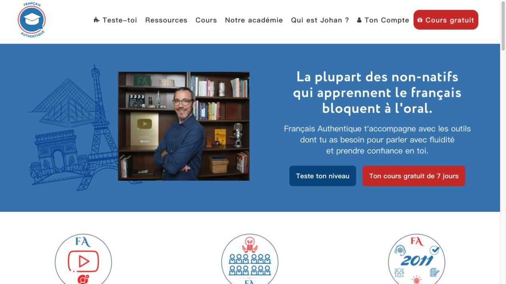
Français Authentique
Move from knowing French to using it aloud
Johan’s learning site emphasizes natural French, repeated exposure, and confidence in communication. It links a large video channel, public learning content, and an academy with additional practice opportunities.
Good for: Learners who already understand some French but hesitate when speaking.
Study tips & access
Try this: Repeat one short extract, then explain the idea using words you already know.
The free introductory course involves registration. Academy access and other programs are separate paid offers.
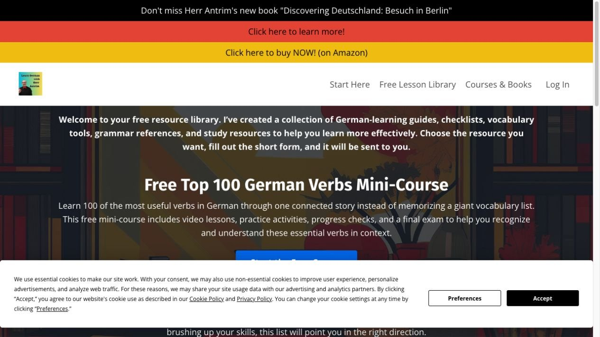
German with Herr Antrim
Build German study around stories and useful references
Herr Antrim’s resource library includes a story-based verb mini-course, vocabulary tools, grammar guides, and study checklists. The materials connect explanations with examples rather than presenting grammar charts alone.
Good for: Learners who want English support and focused German study aids.
Study tips & access
Try this: Choose a verb from a story lesson and create a new scene using it.
Many free resources are sent after completing a form. Books and other products are separate; no form was submitted.
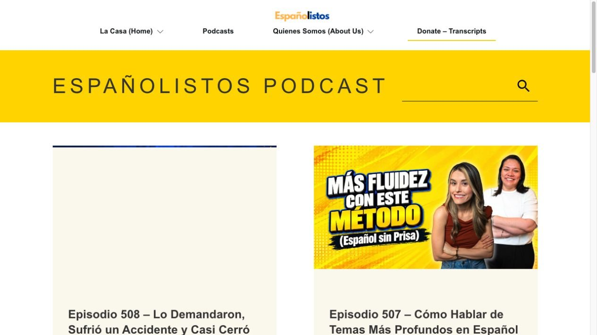
Españolistos
Follow lively Spanish conversations and interviews
A conversational podcast with Andrea and Nate, covering everyday life, learning, interviews, and occasional grammar discussions. Its topic variety gives intermediate listeners material for sustained listening and retelling.
Good for: Intermediate listeners who want more conversational Spanish in their week.
Study tips & access
Try this: Listen to a segment and write down the speakers’ main points before checking unfamiliar words.
Public episode pages are available. Transcript access is handled separately through the site’s support offer.
TalkEnglish.com
Practise what to say in everyday situations
Speaking lessons are arranged around daily life, business, interviews, and basic expressions. Listening lessons and grammar references let you work on understanding and producing the same kinds of sentences.
Good for: Learners who want practical dialogue patterns for work or everyday life.
Study tips & access
Try this: Pick a situation you expect this week and rehearse both sides of a short conversation.
Online speaking lessons are advertised as free. Offline downloads and linked mobile apps have their own conditions.
JapanesePod101
Break an audio dialogue into useful phrases
Audio and video lessons use Japanese conversations with slowed explanations and phrase-by-phrase breakdowns. The learning system also offers word lists, review tools, and teacher support at selected subscription levels.
Good for: Learners who want guided listening alongside vocabulary review.
Study tips & access
Try this: Repeat a few lines from one dialogue, then replace the personal details with your own.
Free account registration is advertised. Lesson access and teacher feedback depend on plan; do not assume the full library is free.
LearnKorean24
Build the basics with lessons and worksheets
A Korean learning library organized into alphabet lessons, a free course, vocabulary, phrases, grammar, quizzes, and worksheets. It is a useful place to pair a short explanation with written practice.
Good for: Beginners who like short lessons and printable exercises.
Study tips & access
Try this: Learn a small set of words, complete a worksheet, and write two original sentences.
The course is labelled free. Advertising and any separate downloads or offers may have their own conditions.
Learn French with Alexa
Follow a teacher through French step by step
Alexa combines video explanations with structured French courses, exercises, quizzes, audio, and live lessons. Public videos and a podcast give you a way to try the teaching style before choosing a full program.
Good for: Learners who want an approachable teacher and an ordered course path.
Study tips & access
Try this: Watch one short grammar lesson and answer its example questions aloud.
Public videos and podcast material are separate from the Complete French Course and exam preparation courses.
Deutsch mit Rieke
Recognize the expressions people use in spoken German
Rieke’s podcast explains useful colloquial expressions in short episodes. Her current homepage also links a video series about how spoken German differs from textbook German.
Good for: Intermediate and advanced learners trying to understand more natural speech.
Study tips & access
Try this: Choose one colloquial expression and invent a two-person exchange that uses it.
The website is being rebuilt, but its podcast links and video-series entry are available. Membership is a separate offer.
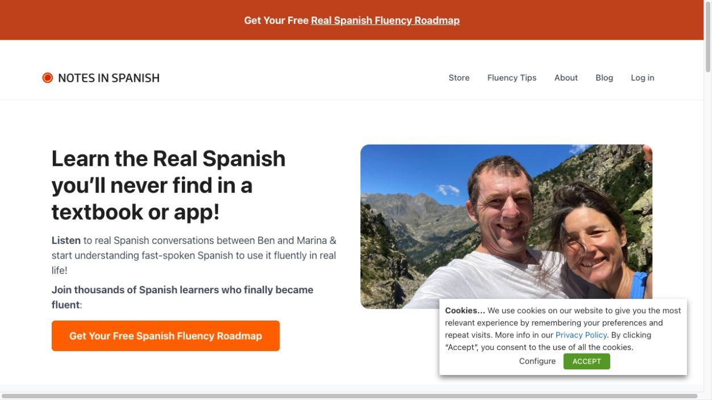
Notes in Spanish
Get used to real conversations from Spain
Ben and Marina’s audio conversations cover everyday language and topics beyond textbook dialogues. Beginner, intermediate, and advanced entry points help you choose how much listening support you need.
Good for: Learners who want Spanish conversation and a progression in difficulty.
Study tips & access
Try this: Choose an episode for your level and practise summarizing one speaker’s view.
Podcast material and paid courses or study support are separate. Check which transcripts and worksheets are included.
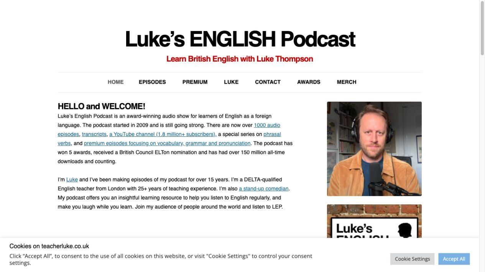
Luke’s English Podcast
Spend more time with conversational British English
Luke Thompson mixes stories, conversations, interviews, and humour in a long-running English learner podcast. The site also links to videos, a phrasal verb series, transcript resources, and separate premium lessons.
Good for: Intermediate and advanced listeners who enjoy longer conversations.
Study tips & access
Try this: Work with five minutes of an episode: note useful phrases, then retell the story aloud.
Transcript coverage varies by episode. Premium lessons are separate; a small cookie notice remains in the screenshot.
Miku Real Japanese
Turn Japanese grammar into spoken sentences
Miku’s courses connect grammar, verb conjugation drills, sentence building, and shadowing. Her linked YouTube channel and podcast also provide natural Japanese listening and conversations about everyday life and culture.
Good for: Learners who recognize grammar but need help using it when speaking.
Study tips & access
Try this: Copy a short model sentence, repeat its rhythm, then change the verb or subject.
The full speaking course is paid. Public videos, podcast episodes, and any trial have separate access conditions.
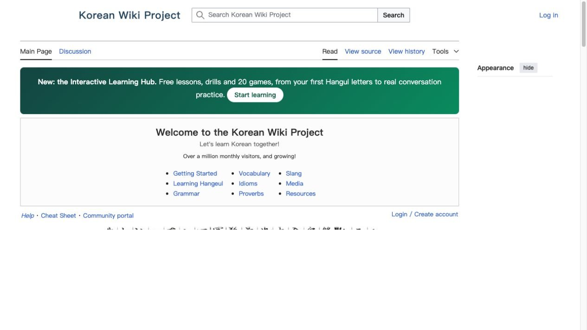
Korean Wiki Project
Explore a community-built Korean reference
A collaborative reference covering Hangeul, grammar, vocabulary, idioms, proverbs, and slang. The site also links to drills and interactive learning material, making it useful when you need a second explanation of a pattern.
Good for: Learners who can compare references and check examples carefully.
Study tips & access
Try this: Look up one pattern you met in a lesson and compare its examples with your textbook.
The site explicitly says many articles are incomplete. Community contributions vary in coverage; cross-check important points.
FrenchPod101
Study French through explained conversations
Short audio and video lessons break down French dialogues into words and phrases. The site also describes vocabulary review, slower audio, pronunciation recording, and optional teacher guidance.
Good for: Learners who prefer explanations alongside the audio they hear.
Study tips & access
Try this: Listen to a short exchange, practise its pronunciation, and adapt it to your own situation.
Free registration is available. Library access and personal teacher feedback depend on the subscription.
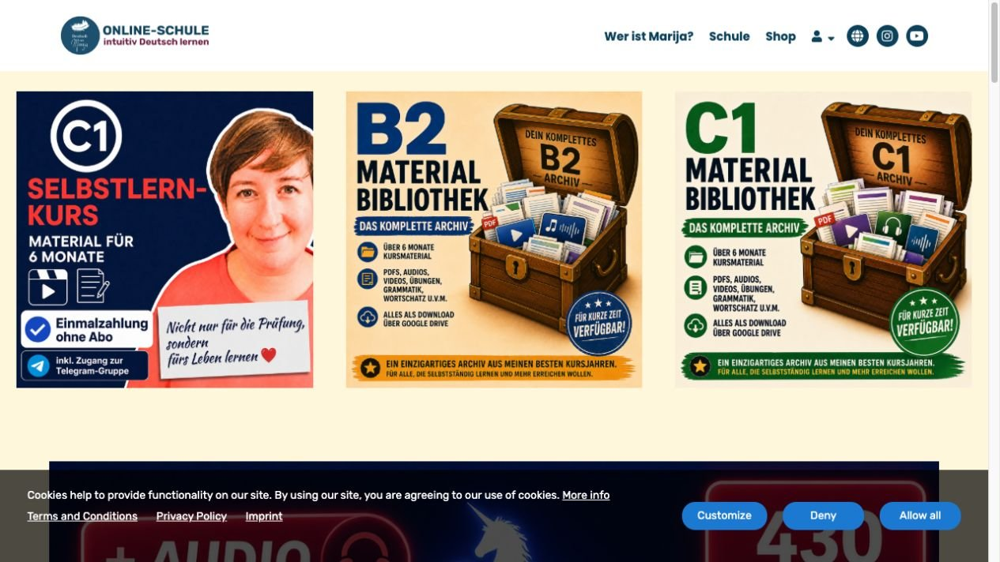
Deutsch mit Marija
Work on advanced German and exam writing
Marija’s official course hub links self-study courses, B2/C1 material libraries, a C2 writing e-book, and individual support. Her linked teaching channel offers another entry point for German explanations and study advice.
Good for: Intermediate and advanced learners preparing for demanding writing and speaking tasks.
Study tips & access
Try this: Draft a short argument, then compare its structure with guidance from a relevant lesson.
The screenshot shows the official Ablefy course hub. Courses, e-books, and tutoring are separate paid offers.
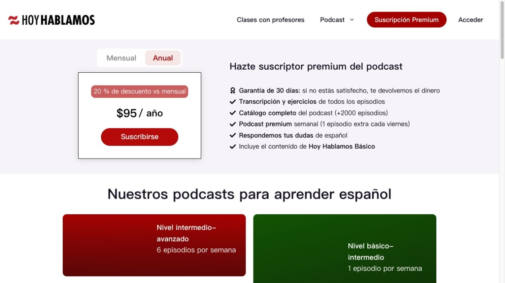
Hoy Hablamos
Build a Spanish listening routine around interesting topics
A podcast platform with everyday topics, native conversations, a grammar series, and a separate basic-level program. Premium study materials connect the audio with transcripts and deliberate practice.
Good for: Learners who want recurring Spanish listening with a choice of difficulty.
Study tips & access
Try this: Listen to one episode, note a useful expression, and use it in a written or spoken response.
Full catalogue access, transcripts, exercises, and premium episodes are subscription features. Check what is publicly available before choosing a plan.
All Ears English
Learn the English people use to connect
A conversational English podcast and course provider focused on communication in everyday life and at work. The site also links to IELTS material and courses aimed at different stages of fluency.
Good for: Learners who want to keep a conversation going beyond textbook answers.
Study tips & access
Try this: Listen for one conversation opener and write two responses you could use yourself.
Public podcast listening and paid courses are different offers. Transcript and membership conditions should be checked.
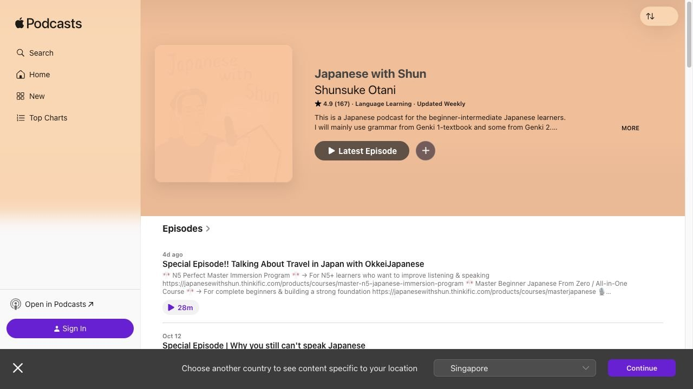
Japanese with Shun
Listen to Japanese built around familiar beginner grammar
Shun’s podcast is aimed at beginner and intermediate learners and mainly uses grammar from the Genki textbooks. Episodes cover everyday topics, with a linked video channel for more listening practice.
Good for: Learners who know some basic Japanese and want manageable native speech.
Study tips & access
Try this: Listen to one short episode twice, then describe the topic using three sentences of your own.
The screenshot is the creator’s Apple Podcasts program page. Transcripts link to Patreon; private lessons and courses are separate.
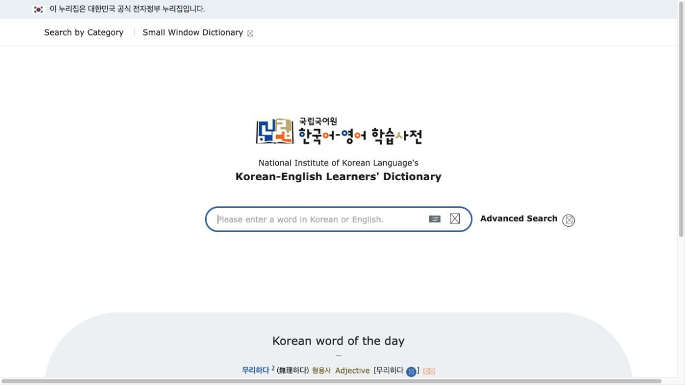
Korean-English Learners’ Dictionary
Choose a Korean word with its meaning in context
The National Institute of Korean Language’s learner dictionary offers Korean entries with English translations and category search. It is a useful companion when checking the meaning or pronunciation of a word before using it in writing.
Good for: Learners who want an official Korean reference alongside a course.
Study tips & access
Try this: Look up a word from your draft, check its meaning, and revise the sentence if needed.
The public English dictionary homepage was reviewed. Individual search results and pronunciation playback were not fully tested.
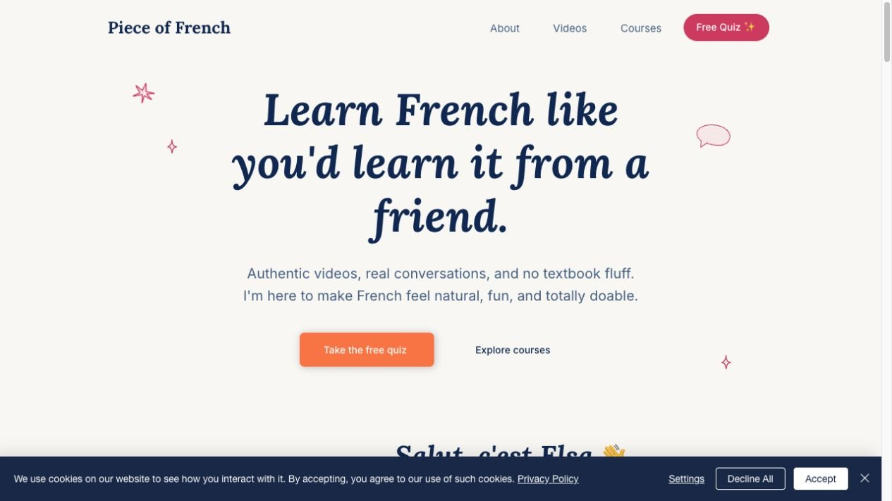
Piece of French
Learn French through everyday life videos
Elsa uses everyday situations and understandable French to build listening confidence. The site links public videos alongside courses that add transcripts, vocabulary, flashcards, and exercises around video content.
Good for: Learners who enjoy lifestyle videos and want French in context.
Study tips & access
Try this: Watch a short scene, note three expressions, and describe a similar moment from your day.
Public YouTube videos are separate from paid course and video-club material.
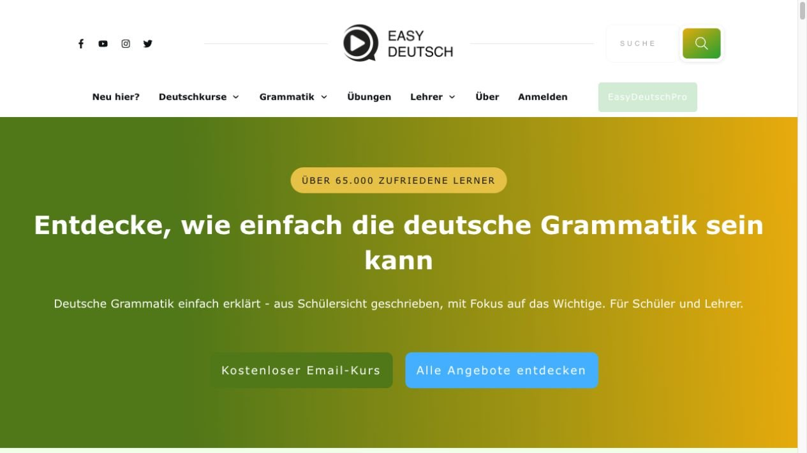
EasyDeutsch
Make German grammar easier to apply
A German grammar teaching site with explanations, exercises, and a linked video channel. Its courses add stories, dialogues, and further practice around the grammar you are trying to use.
Good for: Learners who want practical examples of cases and sentence patterns.
Study tips & access
Try this: Study one rule, make a sentence, then change the noun or tense and check what changes.
Public explanations and channel material coexist with paid Pro plans, e-books, and other offers.
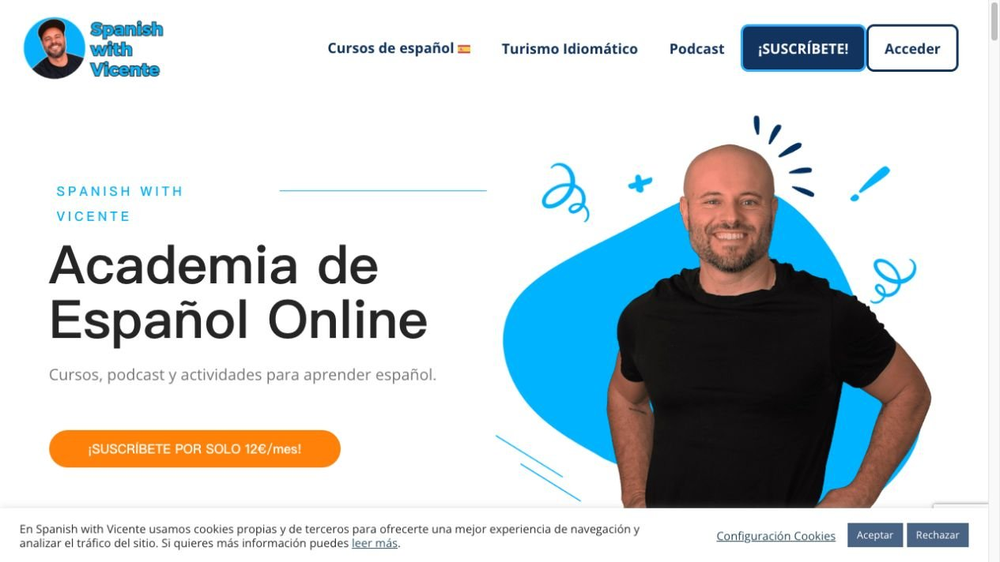
Spanish with Vicente
Learn Spanish through culture and teacher explanations
Vicente’s academy brings together courses, podcast episodes, and learning activities. Topics include life and culture in Spain, and the site describes its teaching channel as another starting point for the method.
Good for: Learners who want Spanish-led explanations and cultural context.
Study tips & access
Try this: Choose a cultural topic and explain one thing you learned using five new expressions.
Academy lessons and podcast PDFs are member content. Check access on each public episode before starting.
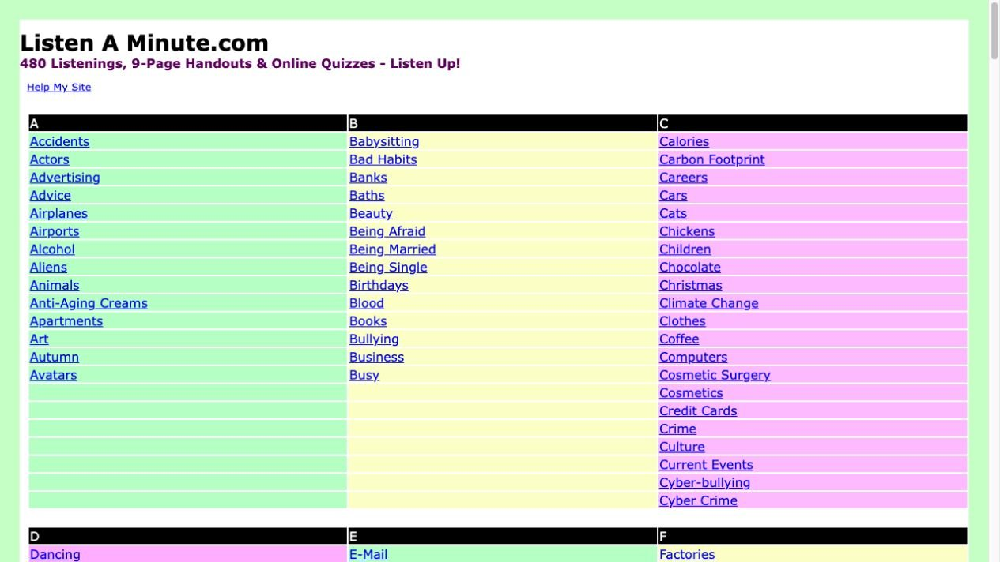
Listen A Minute
Use a one-minute topic for focused practice
An alphabetical collection of short English listening topics, from everyday habits to social issues. The site advertises lesson handouts and online quizzes, giving each small listening passage several possible follow-up tasks.
Good for: Learners who find a full podcast episode too long for close listening.
Study tips & access
Try this: Listen, write down what you hear, compare with the text, and repeat the hardest sentence.
An older-style resource library. Public pages were reviewed; downloads and every quiz were not individually tested.
JLPT Sensei
Find a grammar point by JLPT level
A Japanese reference site organized into JLPT N5–N1 grammar lists, with additional kanji and vocabulary sections. It is useful for locating an explanation or building a checklist while revising for an exam.
Good for: JLPT learners who need a searchable supplement to their main textbook.
Study tips & access
Try this: Choose one grammar point, study its examples, and write a sentence you would actually say.
Public reference pages coexist with downloadable products and membership offers. This is an independent study site.
Nuri King Sejong Institute
Find Korean learning materials from King Sejong Institute
An official portal for Korean and Korean culture learning materials. Its entry points include a learning roadmap, a level test, an e-library, and links to related King Sejong Institute learning services.
Good for: Learners who want official materials and a structured place to start.
Study tips & access
Try this: Choose material for your current stage and complete one short section before moving on.
Some resources or linked services may require registration. Availability and conditions differ between the portal, courses, and apps.
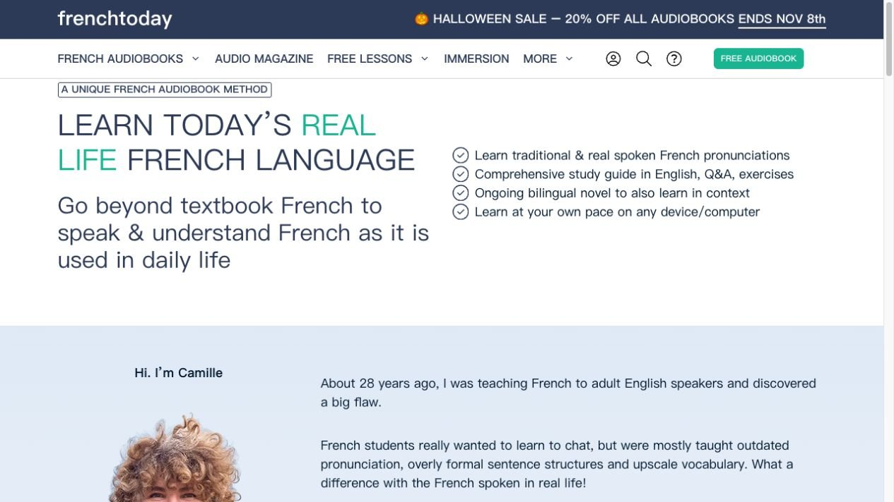
French Today
Hear how written French sounds in real conversation
An audio-based French method combining pronunciation work, a bilingual story, explanations in English, and exercises. It focuses on the gap between formal textbook language and French used in everyday life.
Good for: English-speaking learners who want audio and a longer story to study together.
Study tips & access
Try this: Listen to a sample passage, read its support text, then repeat a few everyday expressions.
The main audiobooks are paid, with samples and public lessons available separately. Check device and app requirements.
Deutsch-to-go
Fit a short German listening task into your day
Short German audio texts are organized into easier, medium, and harder groups. Listening and vocabulary questions, together with readable texts, make each topic suitable for a focused comprehension session.
Good for: Learners who want short audio with a specific follow-up task.
Study tips & access
Try this: Listen without reading, answer the questions, then use the text to review missed words.
Personal website use is described as free. The site prohibits downloading its audio and has separate licensing rules for reuse.
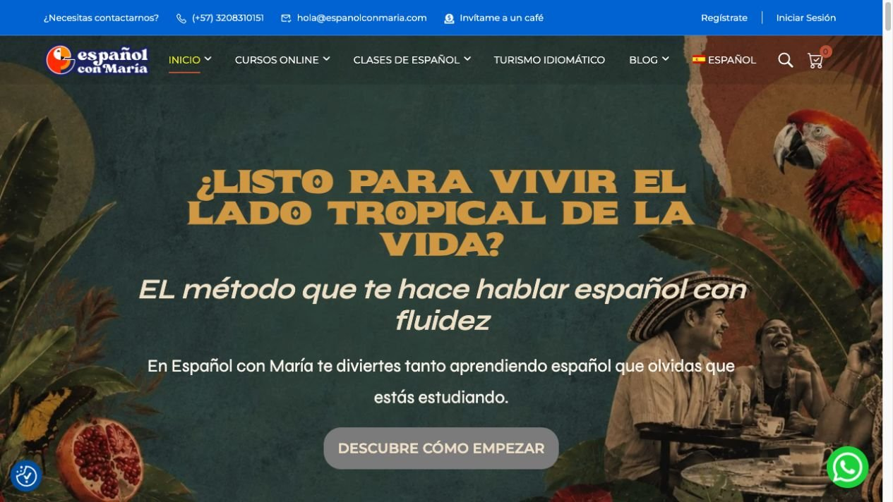
Español con María
Explore Spanish through Latin American life and culture
María’s learning site combines a teaching channel and podcast with courses in grammar, conjugation, pronunciation, and listening. Conversation rooms and individual classes add options for learners who want live practice.
Good for: Learners interested in Latin American Spanish and everyday interaction.
Study tips & access
Try this: Choose a short video, repeat a useful exchange, and adapt it for a conversation of your own.
Public channel and podcast material are separate from courses and classes. The screenshot was taken after rejecting optional cookies.
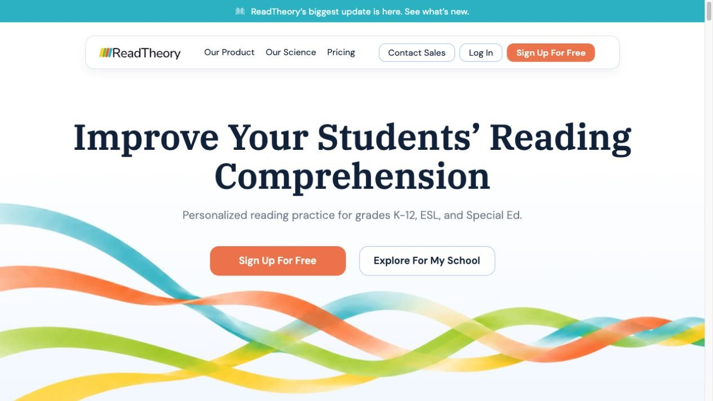
ReadTheory
Practise reading comprehension at your level
A reading practice platform with fiction and nonfiction passages, comprehension questions, and adaptive assessment. It is designed for students and classrooms, including learners of English as an additional language.
Good for: Learners and teachers who want reading questions and progress feedback.
Study tips & access
Try this: Complete one passage slowly, then explain why the correct answer fits the text.
An account is needed for personalized practice. Free sign-up and paid school features are shown; verify plan limits.
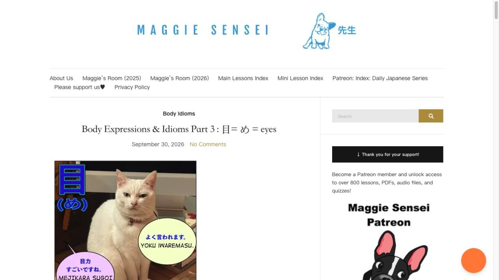
Maggie Sensei
Learn Japanese nuance through example sentences
Detailed lessons compare Japanese expressions, verb patterns, idioms, and casual speech. Japanese examples are accompanied by readings, romanization, and English explanations so you can examine both meaning and register.
Good for: Learners who want examples for a specific nuance or sentence pattern.
Study tips & access
Try this: Choose one expression, read the examples, and write a polite and a casual version of your own.
Public lessons are available alongside optional support links. Use this as a reference rather than a complete course.
Choisusu’s Korean Podcast
Listen to everyday Korean in short topic episodes
Choisusu separates beginner and intermediate episodes about daily life, feelings, food, and Korean culture. The program description links a video channel and the creator’s study website for related learning material.
Good for: Learners who want Korean listening that is shorter than a full interview.
Study tips & access
Try this: Choose the beginner or intermediate version, replay a useful phrase, and make your own example.
The screenshot shows the creator’s Apple Podcasts page. Transcript access is handled on the linked study site; check its conditions.
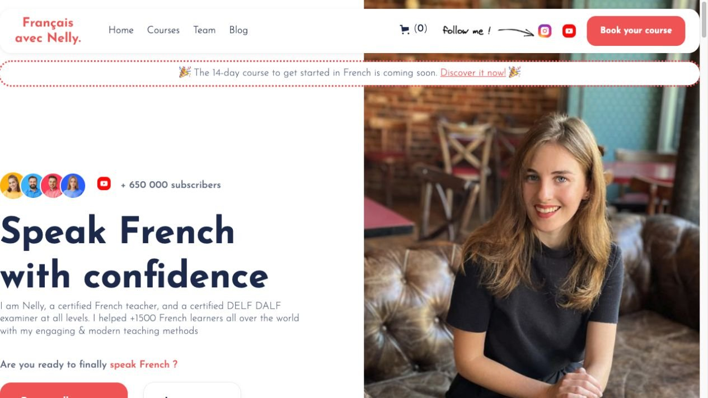
Français avec Nelly
Practise French with a teacher-led approach
Nelly’s site links a French teaching channel, articles, and courses aimed at speaking more confidently. The team also offers tailored lessons, including work on writing, pronunciation, and exam preparation.
Good for: Learners who want public videos before choosing teacher support.
Study tips & access
Try this: Choose one video and practise a short answer to its topic before watching the explanation.
Public channel material and paid courses or individual lessons are separate. Check the teacher and course scope before booking.
Goethe-Institut: Practise German
Find free German practice from Goethe-Institut
An official collection of German practice materials, including interactive grammar and vocabulary exercises, reading and listening activities, videos, podcasts, games, and apps. Topics include daily life, work, and culture.
Good for: Learners who want an official starting point and material matched to an interest.
Study tips & access
Try this: Choose a daily-life topic and finish one activity before opening another resource.
This page curates free practice. Individual linked apps or services may have separate registration and regional conditions.
Lengalia
Follow Spanish courses with tools for review
A Spanish self-study platform with courses for different levels, vocabulary tools, a verb conjugator, pronunciation recording, and a support system. Its course list also includes podcast-based Spanish learning material.
Good for: Learners who want a structured online course rather than a collection of links.
Study tips & access
Try this: Choose a course at your level and combine one lesson with its vocabulary and verb review.
A trial is advertised, followed by paid access. The screenshot shows the German-language homepage; inspect the current trial terms.
LingQ
Keep reading, listening, and saving words in context
LingQ combines a multilingual content library with audio, text, word tracking, and content-import tools. It lets you build a learning routine around books, videos, and topics you actually want to understand.
Good for: Learners who want longer reading and listening sessions with vocabulary support.
Study tips & access
Try this: Choose a short lesson, listen while reading, and return to the words you marked the next day.
Account and paid-plan limits apply, especially to saved words and imports. The screenshot shows the Chinese homepage. Imports may depend on third-party access.
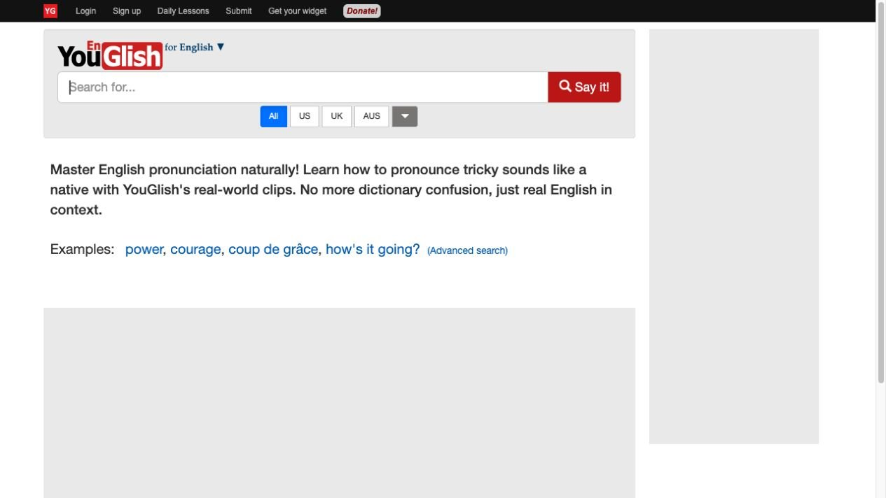
YouGlish
Hear a phrase in real-world video
Search a word or phrase and hear it used in video clips. Compare speakers and accents instead of relying on one isolated dictionary recording.
Good for: Learners who know a word on paper but want to hear its rhythm in a real sentence.
Study tips & access
Try this: Choose one short clip, listen again, then imitate the phrase aloud. This is a suggested practice routine, not a built-in shadowing course.
Search and account options are visible; current usage limits have not been verified.
Speechling
Listen, record, compare, repeat
Practice speaking with recorded model sentences, your own recordings, and coach feedback. The site also links to dictation, listening, and vocabulary exercises.
Good for: Learners who want a repeatable speaking routine and feedback on pronunciation.
Study tips & access
Try this: Listen to a model sentence, repeat it, and compare your recording before requesting feedback.
An account is needed for coaching. Free feedback has limits; check the current plan rather than assuming unlimited coaching.
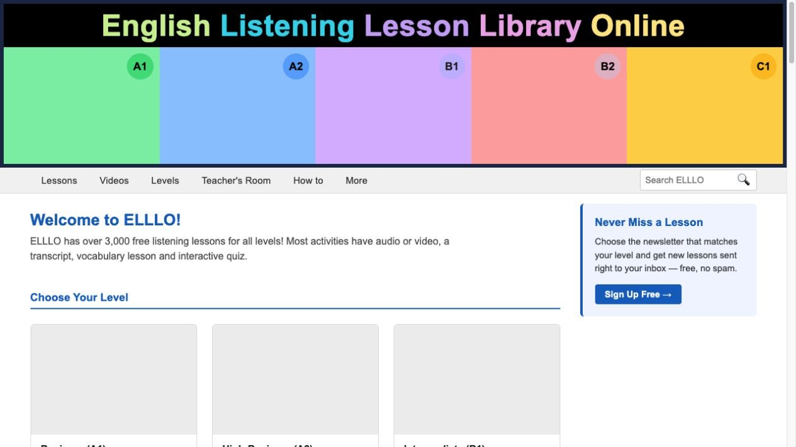
ELLLO
Short conversations with transcripts
Browse English listening lessons organised by level. Most lessons combine audio or video with a transcript, vocabulary support, and a quiz.
Good for: Learners who want manageable conversations rather than a full-length film or lecture.
Study tips & access
Try this: Listen without the transcript, check what you missed, then repeat a short section aloud.
Lesson components vary. Shadowing is an editorial use suggestion, not a claim that every lesson has recording tools.
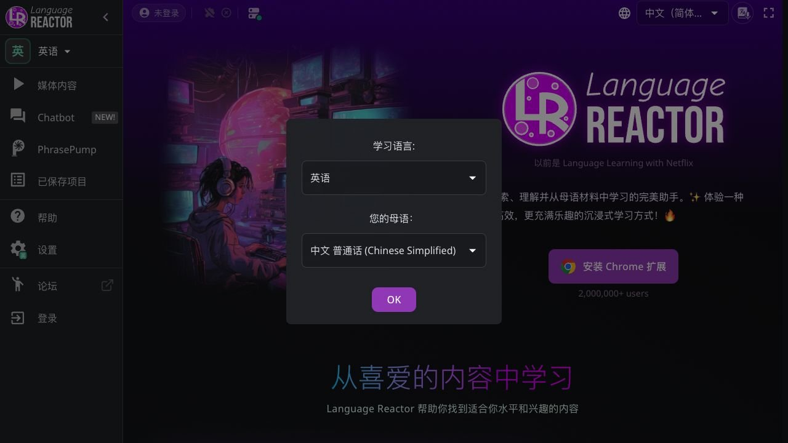
Language Reactor
Study with subtitles and video
A language-learning toolbox for working with subtitled video. Use the supported video workflow to connect listening with reading and vocabulary study.
Good for: Learners who want to study video rather than only watch it passively.
Study tips & access
Try this: Choose a short supported video and work through a few lines before watching the full scene.
Check supported browsers, streaming services, subtitle availability, and current Pro conditions. A streaming subscription may be separate.
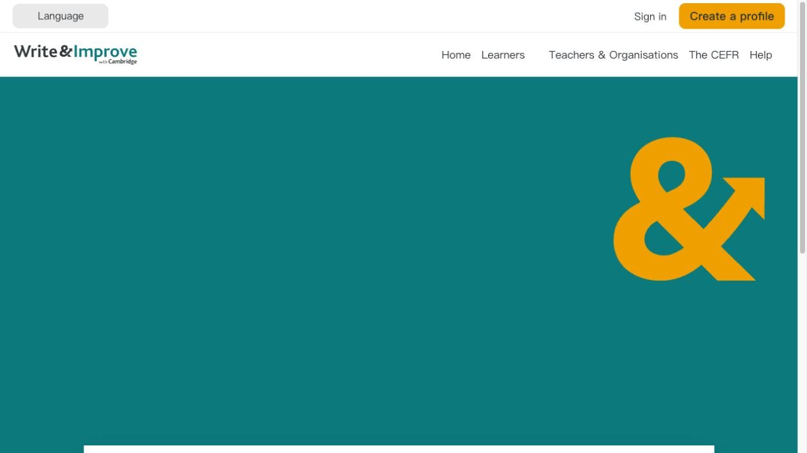
Write & Improve
Revise English writing with feedback
Cambridge’s writing practice tool gives feedback on submitted English and a result linked to CEFR. Rewrite the same piece to work on the areas highlighted.
Good for: English learners who want a cycle of writing, feedback, and revision.
Study tips & access
Try this: Pick one task, write a first draft, then revise it before starting another task.
The free learner tool can be used without registration; a profile saves work. Teacher and organisational products are separate.
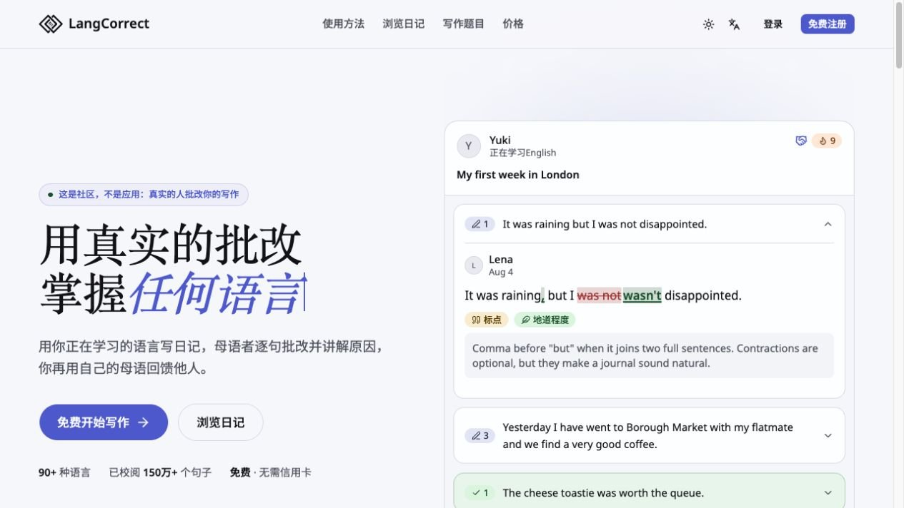
LangCorrect
Write and exchange corrections
Publish writing in a language you are learning and exchange corrections with other learners. The focus is producing your own sentences and learning from feedback.
Good for: Learners who want people to respond to their writing rather than only an automated checker.
Study tips & access
Try this: Write a short diary entry with one question about a phrase you are unsure of.
An account is needed to participate; correction timing and availability depend on the community.
Journaly
Build a writing habit with other learners
A journaling community where language learners write posts and give feedback. Shared interests help turn writing practice into an ongoing conversation.
Good for: Learners who enjoy diary entries, essays, and feedback from other people.
Study tips & access
Try this: Write about an interest you could discuss again next week, then read and respond to another learner.
The homepage shows membership features. Check the current free and paid boundaries; peer feedback is not guaranteed professional marking.
Perfect English Grammar
Understand a rule, then practise it
English grammar explanations, exercises, and PDFs covering tenses, conditionals, reported speech, and more. A separate structured grammar course is also offered.
Good for: Learners who want to repair a specific grammar gap.
Study tips & access
Try this: Choose one tense, read its explanation, and work through the matching exercises.
The homepage distinguishes free materials from the complete grammar system.
Test-English
Practice grammar and skills by level
Level-based grammar, vocabulary, reading, listening, and writing lessons. Explanations and answer feedback make it useful for understanding why an answer was wrong.
Good for: Learners who like short exercises and want to target one skill at a time.
Study tips & access
Try this: Start with a suitable level and keep a note of recurring mistakes after each exercise.
The official homepage and lesson categories were reviewed; individual tests and current access limits were not fully tested.
Tae Kim’s Guide
Build Japanese grammar from the basics
Free Japanese guides that explain grammar through examples and dialogues. The grammar guide works as a reference alongside a class or another study programme.
Good for: Self-directed learners who are comfortable reading explanations in English.
Study tips & access
Try this: Read a single grammar point, then write two original example sentences.
The Complete Guide is described as a work in progress; the separate Grammar Guide is the main reference.
Bunpro
Review Japanese grammar with spaced repetition
Japanese grammar and vocabulary study with explanations, example sentences, fill-in-the-blank questions, and spaced repetition. Study paths can be adjusted around other resources.
Good for: Learners who want a regular grammar review routine.
Study tips & access
Try this: Study a small set of grammar points, then use reviews to recall the correct form.
Account, subscription, and trial conditions should be checked on the current official plan. No exact trial duration is promised here.
Satori Reader
Read Japanese stories with detailed support
Stories and articles with audio, contextual definitions, grammar notes, and adjustable kanji or furigana. The service is designed to support the move into intermediate Japanese reading.
Good for: Intermediate learners who find unsupported native reading too slow.
Study tips & access
Try this: Read one episode, listen to its narration, and revisit the grammar notes for difficult sentences.
Web and mobile options are visible. Check the current sample catalogue and subscription access.
Tadoku Free Books
Start reading Japanese in small steps
A collection of free Japanese graded readers with illustrated stories. The official page provides online reading, printable PDFs, and video options for selected books.
Good for: Beginners building a reading habit and learners who want easier extensive reading.
Study tips & access
Try this: Choose a book that feels easy enough to enjoy without checking every word.
Audio and YouTube availability vary by book; follow the site’s use and copyright conditions.
News in Levels
Make news part of your English routine
Short English news stories organised into levels, with reading and listening study guidance. Everyday topics give you a manageable alternative to long native news articles.
Good for: Learners who prefer current events to textbook dialogues.
Study tips & access
Try this: Read a short story, listen, and retell the main event in two sentences.
The homepage and level navigation were reviewed; audio and access conditions can differ by article.
Mandarin Bean
Read Chinese with pinyin and audio
Graded Chinese reading lessons with word translations, pinyin, teacher-recorded audio, and simplified or traditional text. The site also offers grammar practice and HSK preparation.
Good for: Chinese learners who want supported reading at a chosen difficulty.
Study tips & access
Try this: Read a short lesson once with pinyin hidden, then listen and check unfamiliar words.
The free-access statement applies to graded reading lessons; do not assume every extra product is free.
Readlang
Turn reading into vocabulary practice
Read articles and stories with on-demand translations. The site offers a reading library and a browser workflow for studying texts you choose yourself.
Good for: Independent readers who want to keep reading instead of switching constantly to a dictionary.
Study tips & access
Try this: Read one short text and review a small number of useful words afterwards.
Word, phrase, and AI-related allowances differ by plan. Check current limits before choosing a subscription.
Du Chinese
Learn Chinese through graded stories
Chinese stories and articles with native-speaker audio, word meanings, translations, grammar help, and saved vocabulary. Available on the web, iOS, and Android.
Good for: Chinese learners who want sustained reading and listening on mobile or desktop.
Study tips & access
Try this: Choose a story at a comfortable level and listen again after reading the chapter.
A free chapter is offered on the homepage; full-library access and current plans should be checked separately.
The Fable Cottage
Read and listen to familiar tales
Bilingual retellings of stories for language learners, with audio and animated-story options. Familiar plots let you concentrate on the language rather than an unfamiliar storyline.
Good for: Learners who enjoy narrative reading and families studying together.
Study tips & access
Try this: Choose the same story in your target language and listen after a first reading.
Membership includes additional audio and video. Available languages and media vary by story.

How to Study Korean
Follow Korean grammar lesson by lesson
A structured Korean course from learning to read through advanced grammar. Lessons include explanations and vocabulary, with additional audio, dictation, and study materials.
Good for: Self-directed Korean learners who want a detailed reference and a clear sequence.
Study tips & access
Try this: Read one lesson and create your own examples before moving to the next unit.
Lessons are described as free; extra products and mobile-app access may have separate conditions.
Rachel’s English
Hear the details of American English
Video lessons on American English sounds, linking, rhythm, and real conversation. The official site connects the free YouTube library with a separate accent-training course.
Good for: English learners who want to hear why natural speech sounds different from written words.
Study tips & access
Try this: Pick one linking or sound lesson and imitate the same short phrase several times.
The free video library and paid academy are separate. No result or accent-change timeline is guaranteed.
Easy German
Hear German as it is spoken on the street
Street interviews and everyday conversations with German and English subtitles. Super Easy German offers slower material, and a separate podcast supports longer listening sessions.
Good for: Learners who want real voices and everyday topics with subtitle support.
Study tips & access
Try this: Watch a short interview, then replay one answer and imitate its phrasing.
Interactive transcripts, exercises, and community features are membership offerings.
Easy Languages
Explore language channels through everyday life
A network of video and podcast creators documenting language on the street and among friends. Use its language directory to find a series and voices that interest you.
Good for: Learners looking for authentic conversations and cultural context across languages.
Study tips & access
Try this: Choose a language series and return to the same speakers so their style becomes familiar.
Language coverage varies across the network; not every language has the same video, podcast, or member features.
Japanese Ammo with Misa
Japanese grammar explained through examples
Misa’s Japanese lessons explore grammar, expressions, and how people phrase things in real situations. The site provides a route into her video teaching library.
Good for: Learners who want detailed explanations alongside conversational examples.
Study tips & access
Try this: Choose one expression from a lesson and write your own short dialogue using it.
Public videos and any paid support materials should be checked separately.
Dreaming Spanish
Build Spanish listening through video
Comprehensible-input videos for Spanish learners at different stages. Visual context and level-based browsing help you choose listening that you can follow for meaning.
Good for: Learners who enjoy stories and conversation more than translating isolated sentences.
Study tips & access
Try this: Start with a video you can understand comfortably and focus on following the story.
Free and premium video availability, account features, and supported platforms should be checked on the official site.
Talk To Me In Korean
Build a Korean routine with structured lessons
Korean study resources covering grammar, expressions, and listening. The official platform brings courses and study products together with its public teaching channels.
Good for: Korean learners who want guided study and practical everyday language.
Study tips & access
Try this: Choose one course level and pair a lesson with a short listening session.
Course subscriptions, books, and public video content have different access conditions.
Culips English Podcast
Learn everyday English through conversations
Podcast lessons about everyday expressions and natural English conversation. The site groups episodes into series so you can choose a style of listening practice.
Good for: Learners who want conversational English and repeat listening rather than news alone.
Study tips & access
Try this: Choose a short conversation and replay a few useful exchanges before trying them aloud.
Public episodes and membership study guides have different access conditions; check what is included in each episode.
Coffee Break Languages
Make a short language lesson part of the day
A family of language-learning podcasts and courses with guided lessons. Choose a language series and follow its sequence instead of picking unrelated episodes.
Good for: Learners who enjoy teacher-led explanations and short, repeatable study sessions.
Study tips & access
Try this: Follow one series in order and say the example phrases aloud during review.
Public podcasts and premium course materials are separate. Languages and lesson structures vary by series.
Nihongo con Teppei
Keep Japanese in your ears every day
Japanese podcast episodes built around everyday topics and the host’s conversational style. The official site links to listening options and different series.
Good for: Learners looking for regular Japanese listening beyond textbook dialogue.
Study tips & access
Try this: Start with a short episode, listen for the topic, then repeat it on another day.
Choose a series that matches your level. Episode length, transcript availability, and support options vary.
ChinesePod
Study Mandarin through dialogue lessons
Mandarin learning content centred on audio lessons and dialogues. Browse the official lesson library to find topics and study material suited to your stage.
Good for: Chinese learners who prefer learning expressions inside a conversation.
Study tips & access
Try this: Listen to one dialogue before reading its study material, then reuse a useful expression.
Preview, account, lesson-library, and paid-plan access should be checked on the official service.
Easy Spanish
Hear Spanish in real conversations
Spanish-learning videos and podcast conversations connecting language with everyday life. Follow the official links to choose video or audio practice.
Good for: Learners who want a variety of real voices and topics.
Study tips & access
Try this: Choose one short exchange, check its meaning, and practise the phrasing aloud.
Free episodes and member study materials have different access conditions.
British Council LearnEnglish
Choose English practice by skill and level
An English resource library combining reading, video, audio, grammar, and interactive exercises. The same official site also explains its separate self-study and teacher-led courses.
Good for: Learners who want to work on several skills within a structured resource library.
Study tips & access
Try this: Choose one skill and a comfortable level, then complete an activity before moving to another topic.
The resource library is free; live classes and self-study course products have separate fees. Some community features require an account.
Hemingway Editor
Spot writing that is hard to read
An English writing editor that highlights passages to revise for clarity. Hemingway Editor Plus adds grammar, tone, and assisted editing features as a separate product.
Good for: Writers who want to revise a draft for clearer sentences and a more direct style.
Study tips & access
Try this: Review one highlighted passage at a time and keep changes only when they preserve your meaning.
Classic editor tools and Plus features differ. Readability suggestions are guidance, not a complete language assessment.
Purdue OWL
Find guidance for academic and professional writing
Purdue University’s Online Writing Lab provides writing guidance and reference materials. Use it to look up writing processes, academic conventions, and citation styles.
Good for: Students and writers preparing essays, research papers, or formal English documents.
Study tips & access
Try this: Use the relevant writing or citation guide while revising a real draft.
A reference library, not a service that marks or rewrites your paper. Check the required style edition for your assignment.
Easy French
French conversations with bilingual subtitles
Street interviews and everyday topics with French and English subtitles, plus slower Super Easy videos. A separate podcast offers longer conversations about life in France.
Good for: French learners who want real conversations with support for understanding them.
Study tips & access
Try this: Start with a Super Easy video, then try one short answer from a street interview.
Interactive transcripts, vocabulary helpers, and extra study material are member features. The screenshot is the official network page.
Jisho
Japanese dictionary & kanji lookup
Find Japanese words, kanji, example sentences, and inflection information.
Study tips & access
Public search; optional account.
Website languages confirmed: English.
Forvo
Hear how words are pronounced
Hear words pronounced by speakers around the world, from Japanese to Arabic.
Study tips & access
Public search; an account is needed for audio downloads.
Website languages confirmed: English, German, Spanish, French, Italian, Japanese, Dutch, Polish, Portuguese, Russian, Turkish, Chinese.
Linguno
Conjugation, listening & vocabulary practice
Practice conjugation, listening, vocabulary, and crosswords in six languages.
Study tips & access
Try demo exercises; account and pricing conditions vary.
Website languages confirmed: English, French, German, Spanish, Italian, Portuguese.
TV5MONDE Apprendre
Learn French through real-world video
Learn French through videos, news reports, and listening exercises from A1 to B2.
Study tips & access
Free learning content; interface languages vary by resource.
Website languages confirmed: French, English, Arabic, German, Japanese, Korean, Portuguese, Spanish, Vietnamese, Russian.
DW Learn German
German courses, video & news
Learn German with free courses, Nicos Weg videos, music, and news.
Study tips & access
Chinese guidance is available; some resources are in German.
Website languages confirmed: Chinese, German.
Mirinae
Make sense of Korean sentences
Explore Korean sentences and their grammar, with lessons and a learning library.
Study tips & access
Registration and a trial offer are shown on the website.
Website languages confirmed: Chinese.
DeepL
Translate text & documents
Translate text and documents between languages, with a free text translator.
Study tips & access
Document translation and other features have separate limits.
Website languages confirmed: Chinese.
LanguageTool
Grammar, spelling & writing help
Check spelling, grammar, punctuation, and style across a range of languages.
Study tips & access
Advanced suggestions and rewriting may require Premium.
Website languages confirmed: English, German, Spanish, Dutch, French, Russian, Italian, Portuguese, Ukrainian, Polish.
TTSMaker
Turn written text into spoken audio
Turn text into speech for listening practice, reading aloud, or voiceovers.
Study tips & access
Free quotas and per-conversion limits depend on the voice.
Website languages confirmed: English.
iLovePDF
Everyday tools for your PDF files
Merge, split, compress, and convert PDFs with a collection of browser tools.
Study tips & access
File, batch, and advanced-feature limits vary by plan.
Website languages confirmed: English.
Photopea
A full image editor in your browser
Edit images and PSD files in your browser, with layers, masks, and editing tools.
Study tips & access
The website describes local editing; AI feature terms may differ.
Website languages confirmed: English.
remove.bg
Remove backgrounds from images
Remove image backgrounds automatically for a quick cutout.
Study tips & access
Check current download resolution, credits, and account requirements.
Website languages confirmed: Chinese.
The official homepage announces a move to Canva and says the standalone site will stop working on 1 Dec 2026 at 09:00 CET.
Convertio
Convert files between formats
Convert documents, images, audio, and video files in your browser.
Study tips & access
Files are processed in the cloud; check current free limits.
Website languages confirmed: Chinese.
No resources match yet.
Try a broader task or language, or clear the filters to see the full collection.
A small place to start.
Have a task in mind? These three paths take you straight to a useful website.
Made here, for your study desk.
A few Language Finds tools to keep your Japanese practice going.
JLPT Vocabulary Quiz
Learn, review, and test N5–N1 vocabulary in short rounds.
Japanese Furigana Reader
Make pasted Japanese easier to read and collect useful vocabulary.
Japanese Press Atlas
Read real stories with translation, vocabulary, and questions.